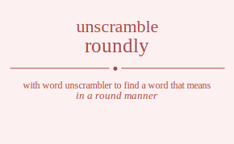

The word found after unscrambling roundly means that in a round manner, in a blunt direct manner, .

The word found after unscrambling roundly means that in a round manner, in a blunt direct manner, .
You can also find solutions for different combinations of letters in roundly like roundly roundyl rounldy rounlyd rounydl rounyld roudnly roudnyl roudlny roudlyn roudynl roudyln roulndy roulnyd rouldny rouldyn roulynd roulydn rouyndl rouynld rouydnl rouydln rouylnd rouyldn ronudly ronudyl ronuldy ronulyd ronuydl ronuyld ronduly ronduyl rondluy rondlyu rondyul rondylu ronludy ronluyd ronlduy ronldyu ronlyud ronlydu ronyudl ronyuld ronydul ronydlu ronylud ronyldu rodunly rodunyl rodulny rodulyn roduynl roduyln rodnuly rodnuyl rodnluy rodnlyu rodnyul rodnylu rodluny rodluyn rodlnuy rodlnyu rodlyun rodlynu rodyunl rodyuln rodynul rodynlu rodylun rodylnu rolundy rolunyd roludny roludyn roluynd roluydn rolnudy rolnuyd rolnduy rolndyu rolnyud rolnydu rolduny rolduyn roldnuy roldnyu roldyun roldynu rolyund rolyudn rolynud rolyndu rolydun rolydnu royundl royunld royudnl royudln royulnd royuldn roynudl roynuld royndul royndlu roynlud roynldu roydunl royduln roydnul roydnlu roydlun roydlnu roylund royludn roylnud roylndu royldun royldnu ruondly ruondyl ruonldy ruonlyd ruonydl ruonyld ruodnly ruodnyl ruodlny ruodlyn ruodynl ruodyln ruolndy ruolnyd ruoldny ruoldyn ruolynd ruolydn ruoyndl ruoynld ruoydnl ruoydln ruoylnd ruoyldn runodly runodyl runoldy runolyd runoydl runoyld rundoly rundoyl rundloy rundlyo rundyol rundylo runlody runloyd runldoy runldyo runlyod runlydo runyodl runyold runydol runydlo runylod runyldo rudonly rudonyl rudolny rudolyn rudoynl rudoyln rudnoly rudnoyl rudnloy rudnlyo rudnyol rudnylo rudlony rudloyn rudlnoy rudlnyo rudlyon rudlyno rudyonl rudyoln rudynol rudynlo rudylon rudylno rulondy rulonyd rulodny rulodyn ruloynd ruloydn rulnody rulnoyd rulndoy rulndyo rulnyod rulnydo ruldony ruldoyn ruldnoy ruldnyo ruldyon ruldyno rulyond rulyodn rulynod rulyndo rulydon rulydno ruyondl ruyonld ruyodnl ruyodln ruyolnd ruyoldn ruynodl ruynold ruyndol ruyndlo ruynlod ruynldo ruydonl ruydoln ruydnol ruydnlo ruydlon ruydlno ruylond ruylodn ruylnod ruylndo ruyldon ruyldno rnoudly rnoudyl rnouldy rnoulyd rnouydl rnouyld rnoduly rnoduyl rnodluy rnodlyu rnodyul rnodylu rnoludy rnoluyd rnolduy rnoldyu rnolyud rnolydu rnoyudl rnoyuld rnoydul rnoydlu rnoylud rnoyldu rnuodly rnuodyl rnuoldy rnuolyd rnuoydl rnuoyld rnudoly rnudoyl rnudloy rnudlyo rnudyol rnudylo rnulody rnuloyd rnuldoy rnuldyo rnulyod rnulydo rnuyodl rnuyold rnuydol rnuydlo rnuylod rnuyldo rndouly rndouyl rndoluy rndolyu rndoyul rndoylu rnduoly rnduoyl rnduloy rndulyo rnduyol rnduylo rndlouy rndloyu rndluoy rndluyo rndlyou rndlyuo rndyoul rndyolu rndyuol rndyulo rndylou rndyluo rnloudy rnlouyd rnloduy rnlodyu rnloyud rnloydu rnluody rnluoyd rnludoy rnludyo rnluyod rnluydo rnldouy rnldoyu rnlduoy rnlduyo rnldyou rnldyuo rnlyoud rnlyodu rnlyuod rnlyudo rnlydou rnlyduo rnyoudl rnyould rnyodul rnyodlu rnyolud rnyoldu rnyuodl rnyuold rnyudol rnyudlo rnyulod rnyuldo rnydoul rnydolu rnyduol rnydulo rnydlou rnydluo rnyloud rnylodu rnyluod rnyludo rnyldou rnylduo rdounly rdounyl rdoulny rdoulyn rdouynl rdouyln rdonuly rdonuyl rdonluy rdonlyu rdonyul rdonylu rdoluny rdoluyn rdolnuy rdolnyu rdolyun rdolynu rdoyunl rdoyuln rdoynul rdoynlu rdoylun rdoylnu rduonly rduonyl rduolny rduolyn rduoynl rduoyln rdunoly rdunoyl rdunloy rdunlyo rdunyol rdunylo rdulony rduloyn rdulnoy rdulnyo rdulyon rdulyno rduyonl rduyoln rduynol rduynlo rduylon rduylno rdnouly rdnouyl rdnoluy rdnolyu rdnoyul rdnoylu rdnuoly rdnuoyl rdnuloy rdnulyo rdnuyol rdnuylo rdnlouy rdnloyu rdnluoy rdnluyo rdnlyou rdnlyuo rdnyoul rdnyolu rdnyuol rdnyulo rdnylou rdnyluo rdlouny rdlouyn rdlonuy rdlonyu rdloyun rdloynu rdluony rdluoyn rdlunoy rdlunyo rdluyon rdluyno rdlnouy rdlnoyu rdlnuoy rdlnuyo rdlnyou rdlnyuo rdlyoun rdlyonu rdlyuon rdlyuno rdlynou rdlynuo rdyounl rdyouln rdyonul rdyonlu rdyolun rdyolnu rdyuonl rdyuoln rdyunol rdyunlo rdyulon rdyulno rdynoul rdynolu rdynuol rdynulo rdynlou rdynluo rdyloun rdylonu rdyluon rdyluno rdylnou rdylnuo rloundy rlounyd rloudny rloudyn rlouynd rlouydn rlonudy rlonuyd rlonduy rlondyu rlonyud rlonydu rloduny rloduyn rlodnuy rlodnyu rlodyun rlodynu rloyund rloyudn rloynud rloyndu rloydun rloydnu rluondy rluonyd rluodny rluodyn rluoynd rluoydn rlunody rlunoyd rlundoy rlundyo rlunyod rlunydo rludony rludoyn rludnoy rludnyo rludyon rludyno rluyond rluyodn rluynod rluyndo rluydon rluydno rlnoudy rlnouyd rlnoduy rlnodyu rlnoyud rlnoydu rlnuody rlnuoyd rlnudoy rlnudyo rlnuyod rlnuydo rlndouy rlndoyu rlnduoy rlnduyo rlndyou rlndyuo rlnyoud rlnyodu rlnyuod rlnyudo rlnydou rlnyduo rldouny rldouyn rldonuy rldonyu rldoyun rldoynu rlduony rlduoyn rldunoy rldunyo rlduyon rlduyno rldnouy rldnoyu rldnuoy rldnuyo rldnyou rldnyuo rldyoun rldyonu rldyuon rldyuno rldynou rldynuo rlyound rlyoudn rlyonud rlyondu rlyodun rlyodnu rlyuond rlyuodn rlyunod rlyundo rlyudon rlyudno rlynoud rlynodu rlynuod rlynudo rlyndou rlynduo rlydoun rlydonu rlyduon rlyduno rlydnou rlydnuo ryoundl ryounld ryoudnl ryoudln ryoulnd ryouldn ryonudl ryonuld ryondul ryondlu ryonlud ryonldu ryodunl ryoduln ryodnul ryodnlu ryodlun ryodlnu ryolund ryoludn ryolnud ryolndu ryoldun ryoldnu ryuondl ryuonld ryuodnl ryuodln ryuolnd ryuoldn ryunodl ryunold ryundol ryundlo ryunlod ryunldo ryudonl ryudoln ryudnol ryudnlo ryudlon ryudlno ryulond ryulodn ryulnod ryulndo ryuldon ryuldno rynoudl rynould rynodul rynodlu rynolud rynoldu rynuodl rynuold rynudol rynudlo rynulod rynuldo ryndoul ryndolu rynduol ryndulo ryndlou ryndluo rynloud rynlodu rynluod rynludo rynldou rynlduo rydounl rydouln rydonul rydonlu rydolun rydolnu ryduonl ryduoln rydunol rydunlo rydulon rydulno rydnoul rydnolu rydnuol rydnulo rydnlou rydnluo rydloun rydlonu rydluon rydluno rydlnou rydlnuo rylound ryloudn rylonud rylondu rylodun rylodnu ryluond ryluodn rylunod rylundo ryludon ryludno rylnoud rylnodu rylnuod rylnudo rylndou rylnduo ryldoun ryldonu rylduon rylduno ryldnou ryldnuo orundly orundyl orunldy orunlyd orunydl orunyld orudnly orudnyl orudlny orudlyn orudynl orudyln orulndy orulnyd oruldny oruldyn orulynd orulydn oruyndl oruynld oruydnl oruydln oruylnd oruyldn ornudly ornudyl ornuldy ornulyd ornuydl ornuyld ornduly ornduyl orndluy orndlyu orndyul orndylu ornludy ornluyd ornlduy ornldyu ornlyud ornlydu ornyudl ornyuld ornydul ornydlu ornylud ornyldu ordunly ordunyl ordulny ordulyn orduynl orduyln ordnuly ordnuyl ordnluy ordnlyu ordnyul ordnylu ordluny ordluyn ordlnuy ordlnyu ordlyun ordlynu ordyunl ordyuln ordynul ordynlu ordylun ordylnu orlundy orlunyd orludny orludyn orluynd orluydn orlnudy orlnuyd orlnduy orlndyu orlnyud orlnydu orlduny orlduyn orldnuy orldnyu orldyun orldynu orlyund orlyudn orlynud orlyndu orlydun orlydnu oryundl oryunld oryudnl oryudln oryulnd oryuldn orynudl orynuld oryndul oryndlu orynlud orynldu orydunl oryduln orydnul orydnlu orydlun orydlnu orylund oryludn orylnud orylndu oryldun oryldnu ourndly ourndyl ournldy ournlyd ournydl ournyld ourdnly ourdnyl ourdlny ourdlyn ourdynl ourdyln ourlndy ourlnyd ourldny ourldyn ourlynd ourlydn ouryndl ourynld ourydnl ourydln ourylnd ouryldn ounrdly ounrdyl ounrldy ounrlyd ounrydl ounryld oundrly oundryl oundlry oundlyr oundyrl oundylr ounlrdy ounlryd ounldry ounldyr ounlyrd ounlydr ounyrdl ounyrld ounydrl ounydlr ounylrd ounyldr oudrnly oudrnyl oudrlny oudrlyn oudrynl oudryln oudnrly oudnryl oudnlry oudnlyr oudnyrl oudnylr oudlrny oudlryn oudlnry oudlnyr oudlyrn oudlynr oudyrnl oudyrln oudynrl oudynlr oudylrn oudylnr oulrndy oulrnyd oulrdny oulrdyn oulrynd oulrydn oulnrdy oulnryd oulndry oulndyr oulnyrd oulnydr ouldrny ouldryn ouldnry ouldnyr ouldyrn ouldynr oulyrnd oulyrdn oulynrd oulyndr oulydrn oulydnr ouyrndl ouyrnld ouyrdnl ouyrdln ouyrlnd ouyrldn ouynrdl ouynrld ouyndrl ouyndlr ouynlrd ouynldr ouydrnl ouydrln ouydnrl ouydnlr ouydlrn ouydlnr ouylrnd ouylrdn ouylnrd ouylndr ouyldrn ouyldnr onrudly onrudyl onruldy onrulyd onruydl onruyld onrduly onrduyl onrdluy onrdlyu onrdyul onrdylu onrludy onrluyd onrlduy onrldyu onrlyud onrlydu onryudl onryuld onrydul onrydlu onrylud onryldu onurdly onurdyl onurldy onurlyd onurydl onuryld onudrly onudryl onudlry onudlyr onudyrl onudylr onulrdy onulryd onuldry onuldyr onulyrd onulydr onuyrdl onuyrld onuydrl onuydlr onuylrd onuyldr ondruly ondruyl ondrluy ondrlyu ondryul ondrylu ondurly onduryl ondulry ondulyr onduyrl onduylr ondlruy ondlryu ondlury ondluyr ondlyru ondlyur ondyrul ondyrlu ondyurl ondyulr ondylru ondylur onlrudy onlruyd onlrduy onlrdyu onlryud onlrydu onlurdy onluryd onludry onludyr onluyrd onluydr onldruy onldryu onldury onlduyr onldyru onldyur onlyrud onlyrdu onlyurd onlyudr onlydru onlydur onyrudl onyruld onyrdul onyrdlu onyrlud onyrldu onyurdl onyurld onyudrl onyudlr onyulrd onyuldr onydrul onydrlu onydurl onydulr onydlru onydlur onylrud onylrdu onylurd onyludr onyldru onyldur odrunly odrunyl odrulny odrulyn odruynl odruyln odrnuly odrnuyl odrnluy odrnlyu odrnyul odrnylu odrluny odrluyn odrlnuy odrlnyu odrlyun odrlynu odryunl odryuln odrynul odrynlu odrylun odrylnu odurnly odurnyl odurlny odurlyn odurynl oduryln odunrly odunryl odunlry odunlyr odunyrl odunylr odulrny odulryn odulnry odulnyr odulyrn odulynr oduyrnl oduyrln oduynrl oduynlr oduylrn oduylnr odnruly odnruyl odnrluy odnrlyu odnryul odnrylu odnurly odnuryl odnulry odnulyr odnuyrl odnuylr odnlruy odnlryu odnlury odnluyr odnlyru odnlyur odnyrul odnyrlu odnyurl odnyulr odnylru odnylur odlruny odlruyn odlrnuy odlrnyu odlryun odlrynu odlurny odluryn odlunry odlunyr odluyrn odluynr odlnruy odlnryu odlnury odlnuyr odlnyru odlnyur odlyrun odlyrnu odlyurn odlyunr odlynru odlynur odyrunl odyruln odyrnul odyrnlu odyrlun odyrlnu odyurnl odyurln odyunrl odyunlr odyulrn odyulnr odynrul odynrlu odynurl odynulr odynlru odynlur odylrun odylrnu odylurn odylunr odylnru odylnur olrundy olrunyd olrudny olrudyn olruynd olruydn olrnudy olrnuyd olrnduy olrndyu olrnyud olrnydu olrduny olrduyn olrdnuy olrdnyu olrdyun olrdynu olryund olryudn olrynud olryndu olrydun olrydnu olurndy olurnyd olurdny olurdyn olurynd olurydn olunrdy olunryd olundry olundyr olunyrd olunydr oludrny oludryn oludnry oludnyr oludyrn oludynr oluyrnd oluyrdn oluynrd oluyndr oluydrn oluydnr olnrudy olnruyd olnrduy olnrdyu olnryud olnrydu olnurdy olnuryd olnudry olnudyr olnuyrd olnuydr olndruy olndryu olndury olnduyr olndyru olndyur olnyrud olnyrdu olnyurd olnyudr olnydru olnydur oldruny oldruyn oldrnuy oldrnyu oldryun oldrynu oldurny olduryn oldunry oldunyr olduyrn olduynr oldnruy oldnryu oldnury oldnuyr oldnyru oldnyur oldyrun oldyrnu oldyurn oldyunr oldynru oldynur olyrund olyrudn olyrnud olyrndu olyrdun olyrdnu olyurnd olyurdn olyunrd olyundr olyudrn olyudnr olynrud olynrdu olynurd olynudr olyndru olyndur olydrun olydrnu olydurn olydunr olydnru olydnur oyrundl oyrunld oyrudnl oyrudln oyrulnd oyruldn oyrnudl oyrnuld oyrndul oyrndlu oyrnlud oyrnldu oyrdunl oyrduln oyrdnul oyrdnlu oyrdlun oyrdlnu oyrlund oyrludn oyrlnud oyrlndu oyrldun oyrldnu oyurndl oyurnld oyurdnl oyurdln oyurlnd oyurldn oyunrdl oyunrld oyundrl oyundlr oyunlrd oyunldr oyudrnl oyudrln oyudnrl oyudnlr oyudlrn oyudlnr oyulrnd oyulrdn oyulnrd oyulndr oyuldrn oyuldnr oynrudl oynruld oynrdul oynrdlu oynrlud oynrldu oynurdl oynurld oynudrl oynudlr oynulrd oynuldr oyndrul oyndrlu oyndurl oyndulr oyndlru oyndlur oynlrud oynlrdu oynlurd oynludr oynldru oynldur oydrunl oydruln oydrnul oydrnlu oydrlun oydrlnu oydurnl oydurln oydunrl oydunlr oydulrn oydulnr oydnrul oydnrlu oydnurl oydnulr oydnlru oydnlur oydlrun oydlrnu oydlurn oydlunr oydlnru oydlnur oylrund oylrudn oylrnud oylrndu oylrdun oylrdnu oylurnd oylurdn oylunrd oylundr oyludrn oyludnr oylnrud oylnrdu oylnurd oylnudr oylndru oylndur oyldrun oyldrnu oyldurn oyldunr oyldnru oyldnur urondly urondyl uronldy uronlyd uronydl uronyld urodnly urodnyl urodlny urodlyn urodynl urodyln urolndy urolnyd uroldny uroldyn urolynd urolydn uroyndl uroynld uroydnl uroydln uroylnd uroyldn urnodly urnodyl urnoldy urnolyd urnoydl urnoyld urndoly urndoyl urndloy urndlyo urndyol urndylo urnlody urnloyd urnldoy urnldyo urnlyod urnlydo urnyodl urnyold urnydol urnydlo urnylod urnyldo urdonly urdonyl urdolny urdolyn urdoynl urdoyln urdnoly urdnoyl urdnloy urdnlyo urdnyol urdnylo urdlony urdloyn urdlnoy urdlnyo urdlyon urdlyno urdyonl urdyoln urdynol urdynlo urdylon urdylno urlondy urlonyd urlodny urlodyn urloynd urloydn urlnody urlnoyd urlndoy urlndyo urlnyod urlnydo urldony urldoyn urldnoy urldnyo urldyon urldyno urlyond urlyodn urlynod urlyndo urlydon urlydno uryondl uryonld uryodnl uryodln uryolnd uryoldn urynodl urynold uryndol uryndlo urynlod urynldo urydonl urydoln urydnol urydnlo urydlon urydlno urylond urylodn urylnod urylndo uryldon uryldno uorndly uorndyl uornldy uornlyd uornydl uornyld uordnly uordnyl uordlny uordlyn uordynl uordyln uorlndy uorlnyd uorldny uorldyn uorlynd uorlydn uoryndl uorynld uorydnl uorydln uorylnd uoryldn uonrdly uonrdyl uonrldy uonrlyd uonrydl uonryld uondrly uondryl uondlry uondlyr uondyrl uondylr uonlrdy uonlryd uonldry uonldyr uonlyrd uonlydr uonyrdl uonyrld uonydrl uonydlr uonylrd uonyldr uodrnly uodrnyl uodrlny uodrlyn uodrynl uodryln uodnrly uodnryl uodnlry uodnlyr uodnyrl uodnylr uodlrny uodlryn uodlnry uodlnyr uodlyrn uodlynr uodyrnl uodyrln uodynrl uodynlr uodylrn uodylnr uolrndy uolrnyd uolrdny uolrdyn uolrynd uolrydn uolnrdy uolnryd uolndry uolndyr uolnyrd uolnydr uoldrny uoldryn uoldnry uoldnyr uoldyrn uoldynr uolyrnd uolyrdn uolynrd uolyndr uolydrn uolydnr uoyrndl uoyrnld uoyrdnl uoyrdln uoyrlnd uoyrldn uoynrdl uoynrld uoyndrl uoyndlr uoynlrd uoynldr uoydrnl uoydrln uoydnrl uoydnlr uoydlrn uoydlnr uoylrnd uoylrdn uoylnrd uoylndr uoyldrn uoyldnr unrodly unrodyl unroldy unrolyd unroydl unroyld unrdoly unrdoyl unrdloy unrdlyo unrdyol unrdylo unrlody unrloyd unrldoy unrldyo unrlyod unrlydo unryodl unryold unrydol unrydlo unrylod unryldo unordly unordyl unorldy unorlyd unorydl unoryld unodrly unodryl unodlry unodlyr unodyrl unodylr unolrdy unolryd unoldry unoldyr unolyrd unolydr unoyrdl unoyrld unoydrl unoydlr unoylrd unoyldr undroly undroyl undrloy undrlyo undryol undrylo undorly undoryl undolry undolyr undoyrl undoylr undlroy undlryo undlory undloyr undlyro undlyor undyrol undyrlo undyorl undyolr undylro undylor unlrody unlroyd unlrdoy unlrdyo unlryod unlrydo unlordy unloryd unlodry unlodyr unloyrd unloydr unldroy unldryo unldory unldoyr unldyro unldyor unlyrod unlyrdo unlyord unlyodr unlydro unlydor unyrodl unyrold unyrdol unyrdlo unyrlod unyrldo unyordl unyorld unyodrl unyodlr unyolrd unyoldr unydrol unydrlo unydorl unydolr unydlro unydlor unylrod unylrdo unylord unylodr unyldro unyldor udronly udronyl udrolny udrolyn udroynl udroyln udrnoly udrnoyl udrnloy udrnlyo udrnyol udrnylo udrlony udrloyn udrlnoy udrlnyo udrlyon udrlyno udryonl udryoln udrynol udrynlo udrylon udrylno udornly udornyl udorlny udorlyn udorynl udoryln udonrly udonryl udonlry udonlyr udonyrl udonylr udolrny udolryn udolnry udolnyr udolyrn udolynr udoyrnl udoyrln udoynrl udoynlr udoylrn udoylnr udnroly udnroyl udnrloy udnrlyo udnryol udnrylo udnorly udnoryl udnolry udnolyr udnoyrl udnoylr udnlroy udnlryo udnlory udnloyr udnlyro udnlyor udnyrol udnyrlo udnyorl udnyolr udnylro udnylor udlrony udlroyn udlrnoy udlrnyo udlryon udlryno udlorny udloryn udlonry udlonyr udloyrn udloynr udlnroy udlnryo udlnory udlnoyr udlnyro udlnyor udlyron udlyrno udlyorn udlyonr udlynro udlynor udyronl udyroln udyrnol udyrnlo udyrlon udyrlno udyornl udyorln udyonrl udyonlr udyolrn udyolnr udynrol udynrlo udynorl udynolr udynlro udynlor udylron udylrno udylorn udylonr udylnro udylnor ulrondy ulronyd ulrodny ulrodyn ulroynd ulroydn ulrnody ulrnoyd ulrndoy ulrndyo ulrnyod ulrnydo ulrdony ulrdoyn ulrdnoy ulrdnyo ulrdyon ulrdyno ulryond ulryodn ulrynod ulryndo ulrydon ulrydno ulorndy ulornyd ulordny ulordyn ulorynd ulorydn ulonrdy ulonryd ulondry ulondyr ulonyrd ulonydr ulodrny ulodryn ulodnry ulodnyr ulodyrn ulodynr uloyrnd uloyrdn uloynrd uloyndr uloydrn uloydnr ulnrody ulnroyd ulnrdoy ulnrdyo ulnryod ulnrydo ulnordy ulnoryd ulnodry ulnodyr ulnoyrd ulnoydr ulndroy ulndryo ulndory ulndoyr ulndyro ulndyor ulnyrod ulnyrdo ulnyord ulnyodr ulnydro ulnydor uldrony uldroyn uldrnoy uldrnyo uldryon uldryno uldorny uldoryn uldonry uldonyr uldoyrn uldoynr uldnroy uldnryo uldnory uldnoyr uldnyro uldnyor uldyron uldyrno uldyorn uldyonr uldynro uldynor ulyrond ulyrodn ulyrnod ulyrndo ulyrdon ulyrdno ulyornd ulyordn ulyonrd ulyondr ulyodrn ulyodnr ulynrod ulynrdo ulynord ulynodr ulyndro ulyndor ulydron ulydrno ulydorn ulydonr ulydnro ulydnor uyrondl uyronld uyrodnl uyrodln uyrolnd uyroldn uyrnodl uyrnold uyrndol uyrndlo uyrnlod uyrnldo uyrdonl uyrdoln uyrdnol uyrdnlo uyrdlon uyrdlno uyrlond uyrlodn uyrlnod uyrlndo uyrldon uyrldno uyorndl uyornld uyordnl uyordln uyorlnd uyorldn uyonrdl uyonrld uyondrl uyondlr uyonlrd uyonldr uyodrnl uyodrln uyodnrl uyodnlr uyodlrn uyodlnr uyolrnd uyolrdn uyolnrd uyolndr uyoldrn uyoldnr uynrodl uynrold uynrdol uynrdlo uynrlod uynrldo uynordl uynorld uynodrl uynodlr uynolrd uynoldr uyndrol uyndrlo uyndorl uyndolr uyndlro uyndlor uynlrod uynlrdo uynlord uynlodr uynldro uynldor uydronl uydroln uydrnol uydrnlo uydrlon uydrlno uydornl uydorln uydonrl uydonlr uydolrn uydolnr uydnrol uydnrlo uydnorl uydnolr uydnlro uydnlor uydlron uydlrno uydlorn uydlonr uydlnro uydlnor uylrond uylrodn uylrnod uylrndo uylrdon uylrdno uylornd uylordn uylonrd uylondr uylodrn uylodnr uylnrod uylnrdo uylnord uylnodr uylndro uylndor uyldron uyldrno uyldorn uyldonr uyldnro uyldnor nroudly nroudyl nrouldy nroulyd nrouydl nrouyld nroduly nroduyl nrodluy nrodlyu nrodyul nrodylu nroludy nroluyd nrolduy nroldyu nrolyud nrolydu nroyudl nroyuld nroydul nroydlu nroylud nroyldu nruodly nruodyl nruoldy nruolyd nruoydl nruoyld nrudoly nrudoyl nrudloy nrudlyo nrudyol nrudylo nrulody nruloyd nruldoy nruldyo nrulyod nrulydo nruyodl nruyold nruydol nruydlo nruylod nruyldo nrdouly nrdouyl nrdoluy nrdolyu nrdoyul nrdoylu nrduoly nrduoyl nrduloy nrdulyo nrduyol nrduylo nrdlouy nrdloyu nrdluoy nrdluyo nrdlyou nrdlyuo nrdyoul nrdyolu nrdyuol nrdyulo nrdylou nrdyluo nrloudy nrlouyd nrloduy nrlodyu nrloyud nrloydu nrluody nrluoyd nrludoy nrludyo nrluyod nrluydo nrldouy nrldoyu nrlduoy nrlduyo nrldyou nrldyuo nrlyoud nrlyodu nrlyuod nrlyudo nrlydou nrlyduo nryoudl nryould nryodul nryodlu nryolud nryoldu nryuodl nryuold nryudol nryudlo nryulod nryuldo nrydoul nrydolu nryduol nrydulo nrydlou nrydluo nryloud nrylodu nryluod nryludo nryldou nrylduo norudly norudyl noruldy norulyd noruydl noruyld norduly norduyl nordluy nordlyu nordyul nordylu norludy norluyd norlduy norldyu norlyud norlydu noryudl noryuld norydul norydlu norylud noryldu nourdly nourdyl nourldy nourlyd nourydl nouryld noudrly noudryl noudlry noudlyr noudyrl noudylr noulrdy noulryd nouldry nouldyr noulyrd noulydr nouyrdl nouyrld nouydrl nouydlr nouylrd nouyldr nodruly nodruyl nodrluy nodrlyu nodryul nodrylu nodurly noduryl nodulry nodulyr noduyrl noduylr nodlruy nodlryu nodlury nodluyr nodlyru nodlyur nodyrul nodyrlu nodyurl nodyulr nodylru nodylur nolrudy nolruyd nolrduy nolrdyu nolryud nolrydu nolurdy noluryd noludry noludyr noluyrd noluydr noldruy noldryu noldury nolduyr noldyru noldyur nolyrud nolyrdu nolyurd nolyudr nolydru nolydur noyrudl noyruld noyrdul noyrdlu noyrlud noyrldu noyurdl noyurld noyudrl noyudlr noyulrd noyuldr noydrul noydrlu noydurl noydulr noydlru noydlur noylrud noylrdu noylurd noyludr noyldru noyldur nurodly nurodyl nuroldy nurolyd nuroydl nuroyld nurdoly nurdoyl nurdloy nurdlyo nurdyol nurdylo nurlody nurloyd nurldoy nurldyo nurlyod nurlydo nuryodl nuryold nurydol nurydlo nurylod nuryldo nuordly nuordyl nuorldy nuorlyd nuorydl nuoryld nuodrly nuodryl nuodlry nuodlyr nuodyrl nuodylr nuolrdy nuolryd nuoldry nuoldyr nuolyrd nuolydr nuoyrdl nuoyrld nuoydrl nuoydlr nuoylrd nuoyldr nudroly nudroyl nudrloy nudrlyo nudryol nudrylo nudorly nudoryl nudolry nudolyr nudoyrl nudoylr nudlroy nudlryo nudlory nudloyr nudlyro nudlyor nudyrol nudyrlo nudyorl nudyolr nudylro nudylor nulrody nulroyd nulrdoy nulrdyo nulryod nulrydo nulordy nuloryd nulodry nulodyr nuloyrd nuloydr nuldroy nuldryo nuldory nuldoyr nuldyro nuldyor nulyrod nulyrdo nulyord nulyodr nulydro nulydor nuyrodl nuyrold nuyrdol nuyrdlo nuyrlod nuyrldo nuyordl nuyorld nuyodrl nuyodlr nuyolrd nuyoldr nuydrol nuydrlo nuydorl nuydolr nuydlro nuydlor nuylrod nuylrdo nuylord nuylodr nuyldro nuyldor ndrouly ndrouyl ndroluy ndrolyu ndroyul ndroylu ndruoly ndruoyl ndruloy ndrulyo ndruyol ndruylo ndrlouy ndrloyu ndrluoy ndrluyo ndrlyou ndrlyuo ndryoul ndryolu ndryuol ndryulo ndrylou ndryluo ndoruly ndoruyl ndorluy ndorlyu ndoryul ndorylu ndourly ndouryl ndoulry ndoulyr ndouyrl ndouylr ndolruy ndolryu ndolury ndoluyr ndolyru ndolyur ndoyrul ndoyrlu ndoyurl ndoyulr ndoylru ndoylur nduroly nduroyl ndurloy ndurlyo nduryol ndurylo nduorly nduoryl nduolry nduolyr nduoyrl nduoylr ndulroy ndulryo ndulory nduloyr ndulyro ndulyor nduyrol nduyrlo nduyorl nduyolr nduylro nduylor ndlrouy ndlroyu ndlruoy ndlruyo ndlryou ndlryuo ndloruy ndloryu ndloury ndlouyr ndloyru ndloyur ndluroy ndluryo ndluory ndluoyr ndluyro ndluyor ndlyrou ndlyruo ndlyoru ndlyour ndlyuro ndlyuor ndyroul ndyrolu ndyruol ndyrulo ndyrlou ndyrluo ndyorul ndyorlu ndyourl ndyoulr ndyolru ndyolur ndyurol ndyurlo ndyuorl ndyuolr ndyulro ndyulor ndylrou ndylruo ndyloru ndylour ndyluro ndyluor nlroudy nlrouyd nlroduy nlrodyu nlroyud nlroydu nlruody nlruoyd nlrudoy nlrudyo nlruyod nlruydo nlrdouy nlrdoyu nlrduoy nlrduyo nlrdyou nlrdyuo nlryoud nlryodu nlryuod nlryudo nlrydou nlryduo nlorudy nloruyd nlorduy nlordyu nloryud nlorydu nlourdy nlouryd nloudry nloudyr nlouyrd nlouydr nlodruy nlodryu nlodury nloduyr nlodyru nlodyur nloyrud nloyrdu nloyurd nloyudr nloydru nloydur nlurody nluroyd nlurdoy nlurdyo nluryod nlurydo nluordy nluoryd nluodry nluodyr nluoyrd nluoydr nludroy nludryo nludory nludoyr nludyro nludyor nluyrod nluyrdo nluyord nluyodr nluydro nluydor nldrouy nldroyu nldruoy nldruyo nldryou nldryuo nldoruy nldoryu nldoury nldouyr nldoyru nldoyur nlduroy nlduryo nlduory nlduoyr nlduyro nlduyor nldyrou nldyruo nldyoru nldyour nldyuro nldyuor nlyroud nlyrodu nlyruod nlyrudo nlyrdou nlyrduo nlyorud nlyordu nlyourd nlyoudr nlyodru nlyodur nlyurod nlyurdo nlyuord nlyuodr nlyudro nlyudor nlydrou nlydruo nlydoru nlydour nlyduro nlyduor nyroudl nyrould nyrodul nyrodlu nyrolud nyroldu nyruodl nyruold nyrudol nyrudlo nyrulod nyruldo nyrdoul nyrdolu nyrduol nyrdulo nyrdlou nyrdluo nyrloud nyrlodu nyrluod nyrludo nyrldou nyrlduo nyorudl nyoruld nyordul nyordlu nyorlud nyorldu nyourdl nyourld nyoudrl nyoudlr nyoulrd nyouldr nyodrul nyodrlu nyodurl nyodulr nyodlru nyodlur nyolrud nyolrdu nyolurd nyoludr nyoldru nyoldur nyurodl nyurold nyurdol nyurdlo nyurlod nyurldo nyuordl nyuorld nyuodrl nyuodlr nyuolrd nyuoldr nyudrol nyudrlo nyudorl nyudolr nyudlro nyudlor nyulrod nyulrdo nyulord nyulodr nyuldro nyuldor nydroul nydrolu nydruol nydrulo nydrlou nydrluo nydorul nydorlu nydourl nydoulr nydolru nydolur nydurol nydurlo nyduorl nyduolr nydulro nydulor nydlrou nydlruo nydloru nydlour nydluro nydluor nylroud nylrodu nylruod nylrudo nylrdou nylrduo nylorud nylordu nylourd nyloudr nylodru nylodur nylurod nylurdo nyluord nyluodr nyludro nyludor nyldrou nyldruo nyldoru nyldour nylduro nylduor drounly drounyl droulny droulyn drouynl drouyln dronuly dronuyl dronluy dronlyu dronyul dronylu droluny droluyn drolnuy drolnyu drolyun drolynu droyunl droyuln droynul droynlu droylun droylnu druonly druonyl druolny druolyn druoynl druoyln drunoly drunoyl drunloy drunlyo drunyol drunylo drulony druloyn drulnoy drulnyo drulyon drulyno druyonl druyoln druynol druynlo druylon druylno drnouly drnouyl drnoluy drnolyu drnoyul drnoylu drnuoly drnuoyl drnuloy drnulyo drnuyol drnuylo drnlouy drnloyu drnluoy drnluyo drnlyou drnlyuo drnyoul drnyolu drnyuol drnyulo drnylou drnyluo drlouny drlouyn drlonuy drlonyu drloyun drloynu drluony drluoyn drlunoy drlunyo drluyon drluyno drlnouy drlnoyu drlnuoy drlnuyo drlnyou drlnyuo drlyoun drlyonu drlyuon drlyuno drlynou drlynuo dryounl dryouln dryonul dryonlu dryolun dryolnu dryuonl dryuoln dryunol dryunlo dryulon dryulno drynoul drynolu drynuol drynulo drynlou drynluo dryloun drylonu dryluon dryluno drylnou drylnuo dorunly dorunyl dorulny dorulyn doruynl doruyln dornuly dornuyl dornluy dornlyu dornyul dornylu dorluny dorluyn dorlnuy dorlnyu dorlyun dorlynu doryunl doryuln dorynul dorynlu dorylun dorylnu dournly dournyl dourlny dourlyn dourynl douryln dounrly dounryl dounlry dounlyr dounyrl dounylr doulrny doulryn doulnry doulnyr doulyrn doulynr douyrnl douyrln douynrl douynlr douylrn douylnr donruly donruyl donrluy donrlyu donryul donrylu donurly donuryl donulry donulyr donuyrl donuylr donlruy donlryu donlury donluyr donlyru donlyur donyrul donyrlu donyurl donyulr donylru donylur dolruny dolruyn dolrnuy dolrnyu dolryun dolrynu dolurny doluryn dolunry dolunyr doluyrn doluynr dolnruy dolnryu dolnury dolnuyr dolnyru dolnyur dolyrun dolyrnu dolyurn dolyunr dolynru dolynur doyrunl doyruln doyrnul doyrnlu doyrlun doyrlnu doyurnl doyurln doyunrl doyunlr doyulrn doyulnr doynrul doynrlu doynurl doynulr doynlru doynlur doylrun doylrnu doylurn doylunr doylnru doylnur duronly duronyl durolny durolyn duroynl duroyln durnoly durnoyl durnloy durnlyo durnyol durnylo durlony durloyn durlnoy durlnyo durlyon durlyno duryonl duryoln durynol durynlo durylon durylno duornly duornyl duorlny duorlyn duorynl duoryln duonrly duonryl duonlry duonlyr duonyrl duonylr duolrny duolryn duolnry duolnyr duolyrn duolynr duoyrnl duoyrln duoynrl duoynlr duoylrn duoylnr dunroly dunroyl dunrloy dunrlyo dunryol dunrylo dunorly dunoryl dunolry dunolyr dunoyrl dunoylr dunlroy dunlryo dunlory dunloyr dunlyro dunlyor dunyrol dunyrlo dunyorl dunyolr dunylro dunylor dulrony dulroyn dulrnoy dulrnyo dulryon dulryno dulorny duloryn dulonry dulonyr duloyrn duloynr dulnroy dulnryo dulnory dulnoyr dulnyro dulnyor dulyron dulyrno dulyorn dulyonr dulynro dulynor duyronl duyroln duyrnol duyrnlo duyrlon duyrlno duyornl duyorln duyonrl duyonlr duyolrn duyolnr duynrol duynrlo duynorl duynolr duynlro duynlor duylron duylrno duylorn duylonr duylnro duylnor dnrouly dnrouyl dnroluy dnrolyu dnroyul dnroylu dnruoly dnruoyl dnruloy dnrulyo dnruyol dnruylo dnrlouy dnrloyu dnrluoy dnrluyo dnrlyou dnrlyuo dnryoul dnryolu dnryuol dnryulo dnrylou dnryluo dnoruly dnoruyl dnorluy dnorlyu dnoryul dnorylu dnourly dnouryl dnoulry dnoulyr dnouyrl dnouylr dnolruy dnolryu dnolury dnoluyr dnolyru dnolyur dnoyrul dnoyrlu dnoyurl dnoyulr dnoylru dnoylur dnuroly dnuroyl dnurloy dnurlyo dnuryol dnurylo dnuorly dnuoryl dnuolry dnuolyr dnuoyrl dnuoylr dnulroy dnulryo dnulory dnuloyr dnulyro dnulyor dnuyrol dnuyrlo dnuyorl dnuyolr dnuylro dnuylor dnlrouy dnlroyu dnlruoy dnlruyo dnlryou dnlryuo dnloruy dnloryu dnloury dnlouyr dnloyru dnloyur dnluroy dnluryo dnluory dnluoyr dnluyro dnluyor dnlyrou dnlyruo dnlyoru dnlyour dnlyuro dnlyuor dnyroul dnyrolu dnyruol dnyrulo dnyrlou dnyrluo dnyorul dnyorlu dnyourl dnyoulr dnyolru dnyolur dnyurol dnyurlo dnyuorl dnyuolr dnyulro dnyulor dnylrou dnylruo dnyloru dnylour dnyluro dnyluor dlrouny dlrouyn dlronuy dlronyu dlroyun dlroynu dlruony dlruoyn dlrunoy dlrunyo dlruyon dlruyno dlrnouy dlrnoyu dlrnuoy dlrnuyo dlrnyou dlrnyuo dlryoun dlryonu dlryuon dlryuno dlrynou dlrynuo dloruny dloruyn dlornuy dlornyu dloryun dlorynu dlourny dlouryn dlounry dlounyr dlouyrn dlouynr dlonruy dlonryu dlonury dlonuyr dlonyru dlonyur dloyrun dloyrnu dloyurn dloyunr dloynru dloynur dlurony dluroyn dlurnoy dlurnyo dluryon dluryno dluorny dluoryn dluonry dluonyr dluoyrn dluoynr dlunroy dlunryo dlunory dlunoyr dlunyro dlunyor dluyron dluyrno dluyorn dluyonr dluynro dluynor dlnrouy dlnroyu dlnruoy dlnruyo dlnryou dlnryuo dlnoruy dlnoryu dlnoury dlnouyr dlnoyru dlnoyur dlnuroy dlnuryo dlnuory dlnuoyr dlnuyro dlnuyor dlnyrou dlnyruo dlnyoru dlnyour dlnyuro dlnyuor dlyroun dlyronu dlyruon dlyruno dlyrnou dlyrnuo dlyorun dlyornu dlyourn dlyounr dlyonru dlyonur dlyuron dlyurno dlyuorn dlyuonr dlyunro dlyunor dlynrou dlynruo dlynoru dlynour dlynuro dlynuor dyrounl dyrouln dyronul dyronlu dyrolun dyrolnu dyruonl dyruoln dyrunol dyrunlo dyrulon dyrulno dyrnoul dyrnolu dyrnuol dyrnulo dyrnlou dyrnluo dyrloun dyrlonu dyrluon dyrluno dyrlnou dyrlnuo dyorunl dyoruln dyornul dyornlu dyorlun dyorlnu dyournl dyourln dyounrl dyounlr dyoulrn dyoulnr dyonrul dyonrlu dyonurl dyonulr dyonlru dyonlur dyolrun dyolrnu dyolurn dyolunr dyolnru dyolnur dyuronl dyuroln dyurnol dyurnlo dyurlon dyurlno dyuornl dyuorln dyuonrl dyuonlr dyuolrn dyuolnr dyunrol dyunrlo dyunorl dyunolr dyunlro dyunlor dyulron dyulrno dyulorn dyulonr dyulnro dyulnor dynroul dynrolu dynruol dynrulo dynrlou dynrluo dynorul dynorlu dynourl dynoulr dynolru dynolur dynurol dynurlo dynuorl dynuolr dynulro dynulor dynlrou dynlruo dynloru dynlour dynluro dynluor dylroun dylronu dylruon dylruno dylrnou dylrnuo dylorun dylornu dylourn dylounr dylonru dylonur dyluron dylurno dyluorn dyluonr dylunro dylunor dylnrou dylnruo dylnoru dylnour dylnuro dylnuor lroundy lrounyd lroudny lroudyn lrouynd lrouydn lronudy lronuyd lronduy lrondyu lronyud lronydu lroduny lroduyn lrodnuy lrodnyu lrodyun lrodynu lroyund lroyudn lroynud lroyndu lroydun lroydnu lruondy lruonyd lruodny lruodyn lruoynd lruoydn lrunody lrunoyd lrundoy lrundyo lrunyod lrunydo lrudony lrudoyn lrudnoy lrudnyo lrudyon lrudyno lruyond lruyodn lruynod lruyndo lruydon lruydno lrnoudy lrnouyd lrnoduy lrnodyu lrnoyud lrnoydu lrnuody lrnuoyd lrnudoy lrnudyo lrnuyod lrnuydo lrndouy lrndoyu lrnduoy lrnduyo lrndyou lrndyuo lrnyoud lrnyodu lrnyuod lrnyudo lrnydou lrnyduo lrdouny lrdouyn lrdonuy lrdonyu lrdoyun lrdoynu lrduony lrduoyn lrdunoy lrdunyo lrduyon lrduyno lrdnouy lrdnoyu lrdnuoy lrdnuyo lrdnyou lrdnyuo lrdyoun lrdyonu lrdyuon lrdyuno lrdynou lrdynuo lryound lryoudn lryonud lryondu lryodun lryodnu lryuond lryuodn lryunod lryundo lryudon lryudno lrynoud lrynodu lrynuod lrynudo lryndou lrynduo lrydoun lrydonu lryduon lryduno lrydnou lrydnuo lorundy lorunyd lorudny lorudyn loruynd loruydn lornudy lornuyd lornduy lorndyu lornyud lornydu lorduny lorduyn lordnuy lordnyu lordyun lordynu loryund loryudn lorynud loryndu lorydun lorydnu lourndy lournyd lourdny lourdyn lourynd lourydn lounrdy lounryd loundry loundyr lounyrd lounydr loudrny loudryn loudnry loudnyr loudyrn loudynr louyrnd louyrdn louynrd louyndr louydrn louydnr lonrudy lonruyd lonrduy lonrdyu lonryud lonrydu lonurdy lonuryd lonudry lonudyr lonuyrd lonuydr londruy londryu londury londuyr londyru londyur lonyrud lonyrdu lonyurd lonyudr lonydru lonydur lodruny lodruyn lodrnuy lodrnyu lodryun lodrynu lodurny loduryn lodunry lodunyr loduyrn loduynr lodnruy lodnryu lodnury lodnuyr lodnyru lodnyur lodyrun lodyrnu lodyurn lodyunr lodynru lodynur loyrund loyrudn loyrnud loyrndu loyrdun loyrdnu loyurnd loyurdn loyunrd loyundr loyudrn loyudnr loynrud loynrdu loynurd loynudr loyndru loyndur loydrun loydrnu loydurn loydunr loydnru loydnur lurondy luronyd lurodny lurodyn luroynd luroydn lurnody lurnoyd lurndoy lurndyo lurnyod lurnydo lurdony lurdoyn lurdnoy lurdnyo lurdyon lurdyno luryond luryodn lurynod luryndo lurydon lurydno luorndy luornyd luordny luordyn luorynd luorydn luonrdy luonryd luondry luondyr luonyrd luonydr luodrny luodryn luodnry luodnyr luodyrn luodynr luoyrnd luoyrdn luoynrd luoyndr luoydrn luoydnr lunrody lunroyd lunrdoy lunrdyo lunryod lunrydo lunordy lunoryd lunodry lunodyr lunoyrd lunoydr lundroy lundryo lundory lundoyr lundyro lundyor lunyrod lunyrdo lunyord lunyodr lunydro lunydor ludrony ludroyn ludrnoy ludrnyo ludryon ludryno ludorny ludoryn ludonry ludonyr ludoyrn ludoynr ludnroy ludnryo ludnory ludnoyr ludnyro ludnyor ludyron ludyrno ludyorn ludyonr ludynro ludynor luyrond luyrodn luyrnod luyrndo luyrdon luyrdno luyornd luyordn luyonrd luyondr luyodrn luyodnr luynrod luynrdo luynord luynodr luyndro luyndor luydron luydrno luydorn luydonr luydnro luydnor lnroudy lnrouyd lnroduy lnrodyu lnroyud lnroydu lnruody lnruoyd lnrudoy lnrudyo lnruyod lnruydo lnrdouy lnrdoyu lnrduoy lnrduyo lnrdyou lnrdyuo lnryoud lnryodu lnryuod lnryudo lnrydou lnryduo lnorudy lnoruyd lnorduy lnordyu lnoryud lnorydu lnourdy lnouryd lnoudry lnoudyr lnouyrd lnouydr lnodruy lnodryu lnodury lnoduyr lnodyru lnodyur lnoyrud lnoyrdu lnoyurd lnoyudr lnoydru lnoydur lnurody lnuroyd lnurdoy lnurdyo lnuryod lnurydo lnuordy lnuoryd lnuodry lnuodyr lnuoyrd lnuoydr lnudroy lnudryo lnudory lnudoyr lnudyro lnudyor lnuyrod lnuyrdo lnuyord lnuyodr lnuydro lnuydor lndrouy lndroyu lndruoy lndruyo lndryou lndryuo lndoruy lndoryu lndoury lndouyr lndoyru lndoyur lnduroy lnduryo lnduory lnduoyr lnduyro lnduyor lndyrou lndyruo lndyoru lndyour lndyuro lndyuor lnyroud lnyrodu lnyruod lnyrudo lnyrdou lnyrduo lnyorud lnyordu lnyourd lnyoudr lnyodru lnyodur lnyurod lnyurdo lnyuord lnyuodr lnyudro lnyudor lnydrou lnydruo lnydoru lnydour lnyduro lnyduor ldrouny ldrouyn ldronuy ldronyu ldroyun ldroynu ldruony ldruoyn ldrunoy ldrunyo ldruyon ldruyno ldrnouy ldrnoyu ldrnuoy ldrnuyo ldrnyou ldrnyuo ldryoun ldryonu ldryuon ldryuno ldrynou ldrynuo ldoruny ldoruyn ldornuy ldornyu ldoryun ldorynu ldourny ldouryn ldounry ldounyr ldouyrn ldouynr ldonruy ldonryu ldonury ldonuyr ldonyru ldonyur ldoyrun ldoyrnu ldoyurn ldoyunr ldoynru ldoynur ldurony lduroyn ldurnoy ldurnyo lduryon lduryno lduorny lduoryn lduonry lduonyr lduoyrn lduoynr ldunroy ldunryo ldunory ldunoyr ldunyro ldunyor lduyron lduyrno lduyorn lduyonr lduynro lduynor ldnrouy ldnroyu ldnruoy ldnruyo ldnryou ldnryuo ldnoruy ldnoryu ldnoury ldnouyr ldnoyru ldnoyur ldnuroy ldnuryo ldnuory ldnuoyr ldnuyro ldnuyor ldnyrou ldnyruo ldnyoru ldnyour ldnyuro ldnyuor ldyroun ldyronu ldyruon ldyruno ldyrnou ldyrnuo ldyorun ldyornu ldyourn ldyounr ldyonru ldyonur ldyuron ldyurno ldyuorn ldyuonr ldyunro ldyunor ldynrou ldynruo ldynoru ldynour ldynuro ldynuor lyround lyroudn lyronud lyrondu lyrodun lyrodnu lyruond lyruodn lyrunod lyrundo lyrudon lyrudno lyrnoud lyrnodu lyrnuod lyrnudo lyrndou lyrnduo lyrdoun lyrdonu lyrduon lyrduno lyrdnou lyrdnuo lyorund lyorudn lyornud lyorndu lyordun lyordnu lyournd lyourdn lyounrd lyoundr lyoudrn lyoudnr lyonrud lyonrdu lyonurd lyonudr lyondru lyondur lyodrun lyodrnu lyodurn lyodunr lyodnru lyodnur lyurond lyurodn lyurnod lyurndo lyurdon lyurdno lyuornd lyuordn lyuonrd lyuondr lyuodrn lyuodnr lyunrod lyunrdo lyunord lyunodr lyundro lyundor lyudron lyudrno lyudorn lyudonr lyudnro lyudnor lynroud lynrodu lynruod lynrudo lynrdou lynrduo lynorud lynordu lynourd lynoudr lynodru lynodur lynurod lynurdo lynuord lynuodr lynudro lynudor lyndrou lyndruo lyndoru lyndour lynduro lynduor lydroun lydronu lydruon lydruno lydrnou lydrnuo lydorun lydornu lydourn lydounr lydonru lydonur lyduron lydurno lyduorn lyduonr lydunro lydunor lydnrou lydnruo lydnoru lydnour lydnuro lydnuor yroundl yrounld yroudnl yroudln yroulnd yrouldn yronudl yronuld yrondul yrondlu yronlud yronldu yrodunl yroduln yrodnul yrodnlu yrodlun yrodlnu yrolund yroludn yrolnud yrolndu yroldun yroldnu yruondl yruonld yruodnl yruodln yruolnd yruoldn yrunodl yrunold yrundol yrundlo yrunlod yrunldo yrudonl yrudoln yrudnol yrudnlo yrudlon yrudlno yrulond yrulodn yrulnod yrulndo yruldon yruldno yrnoudl yrnould yrnodul yrnodlu yrnolud yrnoldu yrnuodl yrnuold yrnudol yrnudlo yrnulod yrnuldo yrndoul yrndolu yrnduol yrndulo yrndlou yrndluo yrnloud yrnlodu yrnluod yrnludo yrnldou yrnlduo yrdounl yrdouln yrdonul yrdonlu yrdolun yrdolnu yrduonl yrduoln yrdunol yrdunlo yrdulon yrdulno yrdnoul yrdnolu yrdnuol yrdnulo yrdnlou yrdnluo yrdloun yrdlonu yrdluon yrdluno yrdlnou yrdlnuo yrlound yrloudn yrlonud yrlondu yrlodun yrlodnu yrluond yrluodn yrlunod yrlundo yrludon yrludno yrlnoud yrlnodu yrlnuod yrlnudo yrlndou yrlnduo yrldoun yrldonu yrlduon yrlduno yrldnou yrldnuo yorundl yorunld yorudnl yorudln yorulnd yoruldn yornudl yornuld yorndul yorndlu yornlud yornldu yordunl yorduln yordnul yordnlu yordlun yordlnu yorlund yorludn yorlnud yorlndu yorldun yorldnu yourndl yournld yourdnl yourdln yourlnd yourldn younrdl younrld youndrl youndlr younlrd younldr youdrnl youdrln youdnrl youdnlr youdlrn youdlnr youlrnd youlrdn youlnrd youlndr youldrn youldnr yonrudl yonruld yonrdul yonrdlu yonrlud yonrldu yonurdl yonurld yonudrl yonudlr yonulrd yonuldr yondrul yondrlu yondurl yondulr yondlru yondlur yonlrud yonlrdu yonlurd yonludr yonldru yonldur yodrunl yodruln yodrnul yodrnlu yodrlun yodrlnu yodurnl yodurln yodunrl yodunlr yodulrn yodulnr yodnrul yodnrlu yodnurl yodnulr yodnlru yodnlur yodlrun yodlrnu yodlurn yodlunr yodlnru yodlnur yolrund yolrudn yolrnud yolrndu yolrdun yolrdnu yolurnd yolurdn yolunrd yolundr yoludrn yoludnr yolnrud yolnrdu yolnurd yolnudr yolndru yolndur yoldrun yoldrnu yoldurn yoldunr yoldnru yoldnur yurondl yuronld yurodnl yurodln yurolnd yuroldn yurnodl yurnold yurndol yurndlo yurnlod yurnldo yurdonl yurdoln yurdnol yurdnlo yurdlon yurdlno yurlond yurlodn yurlnod yurlndo yurldon yurldno yuorndl yuornld yuordnl yuordln yuorlnd yuorldn yuonrdl yuonrld yuondrl yuondlr yuonlrd yuonldr yuodrnl yuodrln yuodnrl yuodnlr yuodlrn yuodlnr yuolrnd yuolrdn yuolnrd yuolndr yuoldrn yuoldnr yunrodl yunrold yunrdol yunrdlo yunrlod yunrldo yunordl yunorld yunodrl yunodlr yunolrd yunoldr yundrol yundrlo yundorl yundolr yundlro yundlor yunlrod yunlrdo yunlord yunlodr yunldro yunldor yudronl yudroln yudrnol yudrnlo yudrlon yudrlno yudornl yudorln yudonrl yudonlr yudolrn yudolnr yudnrol yudnrlo yudnorl yudnolr yudnlro yudnlor yudlron yudlrno yudlorn yudlonr yudlnro yudlnor yulrond yulrodn yulrnod yulrndo yulrdon yulrdno yulornd yulordn yulonrd yulondr yulodrn yulodnr yulnrod yulnrdo yulnord yulnodr yulndro yulndor yuldron yuldrno yuldorn yuldonr yuldnro yuldnor ynroudl ynrould ynrodul ynrodlu ynrolud ynroldu ynruodl ynruold ynrudol ynrudlo ynrulod ynruldo ynrdoul ynrdolu ynrduol ynrdulo ynrdlou ynrdluo ynrloud ynrlodu ynrluod ynrludo ynrldou ynrlduo ynorudl ynoruld ynordul ynordlu ynorlud ynorldu ynourdl ynourld ynoudrl ynoudlr ynoulrd ynouldr ynodrul ynodrlu ynodurl ynodulr ynodlru ynodlur ynolrud ynolrdu ynolurd ynoludr ynoldru ynoldur ynurodl ynurold ynurdol ynurdlo ynurlod ynurldo ynuordl ynuorld ynuodrl ynuodlr ynuolrd ynuoldr ynudrol ynudrlo ynudorl ynudolr ynudlro ynudlor ynulrod ynulrdo ynulord ynulodr ynuldro ynuldor yndroul yndrolu yndruol yndrulo yndrlou yndrluo yndorul yndorlu yndourl yndoulr yndolru yndolur yndurol yndurlo ynduorl ynduolr yndulro yndulor yndlrou yndlruo yndloru yndlour yndluro yndluor ynlroud ynlrodu ynlruod ynlrudo ynlrdou ynlrduo ynlorud ynlordu ynlourd ynloudr ynlodru ynlodur ynlurod ynlurdo ynluord ynluodr ynludro ynludor ynldrou ynldruo ynldoru ynldour ynlduro ynlduor ydrounl ydrouln ydronul ydronlu ydrolun ydrolnu ydruonl ydruoln ydrunol ydrunlo ydrulon ydrulno ydrnoul ydrnolu ydrnuol ydrnulo ydrnlou ydrnluo ydrloun ydrlonu ydrluon ydrluno ydrlnou ydrlnuo ydorunl ydoruln ydornul ydornlu ydorlun ydorlnu ydournl ydourln ydounrl ydounlr ydoulrn ydoulnr ydonrul ydonrlu ydonurl ydonulr ydonlru ydonlur ydolrun ydolrnu ydolurn ydolunr ydolnru ydolnur yduronl yduroln ydurnol ydurnlo ydurlon ydurlno yduornl yduorln yduonrl yduonlr yduolrn yduolnr ydunrol ydunrlo ydunorl ydunolr ydunlro ydunlor ydulron ydulrno ydulorn ydulonr ydulnro ydulnor ydnroul ydnrolu ydnruol ydnrulo ydnrlou ydnrluo ydnorul ydnorlu ydnourl ydnoulr ydnolru ydnolur ydnurol ydnurlo ydnuorl ydnuolr ydnulro ydnulor ydnlrou ydnlruo ydnloru ydnlour ydnluro ydnluor ydlroun ydlronu ydlruon ydlruno ydlrnou ydlrnuo ydlorun ydlornu ydlourn ydlounr ydlonru ydlonur ydluron ydlurno ydluorn ydluonr ydlunro ydlunor ydlnrou ydlnruo ydlnoru ydlnour ydlnuro ydlnuor ylround ylroudn ylronud ylrondu ylrodun ylrodnu ylruond ylruodn ylrunod ylrundo ylrudon ylrudno ylrnoud ylrnodu ylrnuod ylrnudo ylrndou ylrnduo ylrdoun ylrdonu ylrduon ylrduno ylrdnou ylrdnuo ylorund ylorudn ylornud ylorndu ylordun ylordnu ylournd ylourdn ylounrd yloundr yloudrn yloudnr ylonrud ylonrdu ylonurd ylonudr ylondru ylondur ylodrun ylodrnu ylodurn ylodunr ylodnru ylodnur ylurond ylurodn ylurnod ylurndo ylurdon ylurdno yluornd yluordn yluonrd yluondr yluodrn yluodnr ylunrod ylunrdo ylunord ylunodr ylundro ylundor yludron yludrno yludorn yludonr yludnro yludnor ylnroud ylnrodu ylnruod ylnrudo ylnrdou ylnrduo ylnorud ylnordu ylnourd ylnoudr ylnodru ylnodur ylnurod ylnurdo ylnuord ylnuodr ylnudro ylnudor ylndrou ylndruo ylndoru ylndour ylnduro ylnduor yldroun yldronu yldruon yldruno yldrnou yldrnuo yldorun yldornu yldourn yldounr yldonru yldonur ylduron yldurno ylduorn ylduonr yldunro yldunor yldnrou yldnruo yldnoru yldnour yldnuro yldnuor.
Unscramble Words is registered trademark.